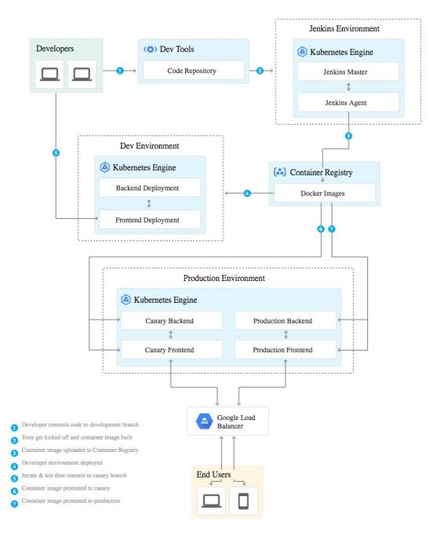

CI/CD for container-based applications
One of the most popular ways to deploy container-based applications on Google Cloud is by using Kubernetes. In fact, as discussed earlier, Kubernetes originated from Google's internal technologies, invented to solve problems exactly like continuous code integration and deployment. That's why if you are looking to implement CI/CD patterns in such an environment, then it's easy to do so.
It's pretty straightforward to implement release management aspects if you are using Kubernetes CLI/API as it has actions which can implement updating resources with the latest version of application code by using the latest container images. You can do this by using the rolling updates mechanism, or if during the update process there are some issues that have been discovered, then you can also abort the process or roll back to previous versions. More details on the Kubernetes CLI update operations can be found at the following link: https://kubernetes.io/docs/reference/kubectl/cheatsheet/#updating-resources.
Google Cloud has an interesting comic that can help you learn the CI/CD options with Kubernetes in a fun manner: https://cloud.google.com/kubernetes-engine/kubernetes-comic/.
Another mechanism to implement CI/CD in the Kubernetes environment is by using Jenkins, which is an open source automation server that lets you flexibly orchestrate your build, test, and deployment pipelines. In order to do that, you need to deploy Jenkins on the Kubernetes Engine (a Google Cloud hosted version of Kubernetes) and install Kubernetes plugins for Jenkins, setting up proper configuration to orchestrate the entire deployment process. The following diagram shows the entire setup and different steps, as per the Google Cloud documentation:
